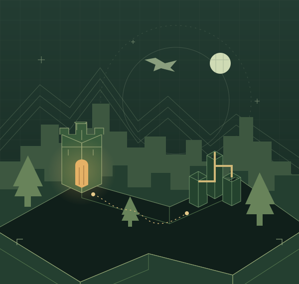

Приключения
Новые миры, подземелья и сокровища.
Minecraft с новыми возможностями
Большой мир, сильные боссы и технологии — для одиночной игры и приключений с друзьями.
0.3.3-alpha · тестовая сборка · единый Optimized

Новые миры, подземелья и сокровища.
Драконы, боссы и современное оружие.
Заводы, автоматизация и энергия.
Установка
Установщик с графическим интерфейсом. Python и терминал игроку не нужны.
Один оптимизированный профиль · Java 21
Скачать установщикПока через GitHub Actions: для скачивания ZIP нужен аккаунт GitHub.
Проверь успешный запуск сборки в GitHub Actions.
Это тестовая версия. Перед переносом миров сделай резервную копию. Игровая совместимость всех модов ещё не проверена.
Каталог включает кандидатов, не только установленные моды.
Загружаем каталог…
Формы ничего не отправляют автоматически. Для публикации нужен GitHub. Не прикладывай личные данные и секреты.
Загружаем обращения…
Сначала сделай копию мира. Изменения модов могут затронуть блоки и предметы.
Нет, если NeoForge 21.1.264 уже установлен. Используй отдельную папку игры.
Профиль оптимизирован, но производительность зависит от компьютера, мира и модов; гарантий FPS пока нет.